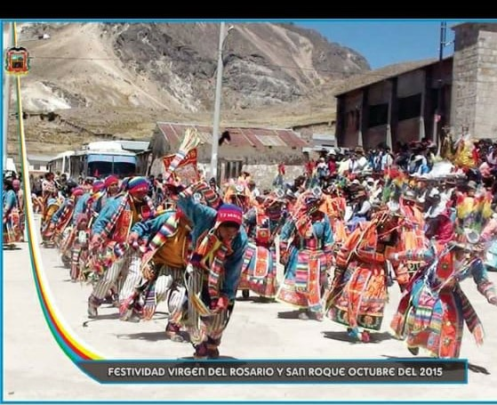

"LA FIESTA DE VIRGEN"
La festividad,santisima virgen rosario del distrito san antonio se lleva en el mes de octubre,cobijado de trascendentes apus tuterares.En octubre vive la
manifestacion de cultura y religiosa festividad virgen del rosario y san roque, san antonio del 14 al 17 de octubre "viernes:vispera en honor de san roque 07:00de la noche"
"sabado:misa en honor de san roque 10:00 de la mañana" recepcion y encuentro de virgen rosario y san roque lugar ceuzpata -jucal
Concurso de caballos de paso del distrito y visitantes lugar ,``estadio``de juncal.
Misa en honor virgen rosario 7.00 de la noche,vispera en honor a la santisima virgen rosario-8.00 de la noche.
Domingo ceremonia civico de izamiento de la bandera nacional y la bandera del distrito -9.00 de la mañana.
Misa central en honor a la santisima vergen de rosario 10.00 de la mañana.
Veneracion a la santisima virgen rosario 12.00 del medio dia.
Lunes receocion de toros de los alferados los autoridades 10.00 de la mañana.
Gran tarde taurina ofrecido por los alferados de toros inicia 12.00 del medio dia.
>
"TODOS LOS SANTOS"
El dia de los muertos, que se festeja del 1 al 2 de noviembre,es una celebracion para honrar alos muertos que se remonta ala era preespanica y tras la llegada se mesclo
las fiestas catolicas de los fieles difuntos.es para recordar a nuestros reses queridos,Es un dia especial en el calendario en el que se honra alos seres queridos
que an fallesido.
Una jornada en la que el sementerio se inunda de personas para vicitar y recordar a los nuestros,adornando las tumbes de flores,dulces y otras cositas mas.